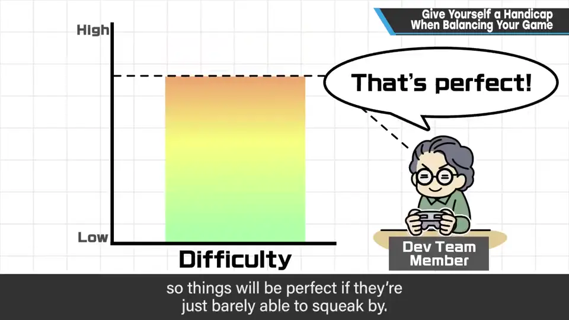
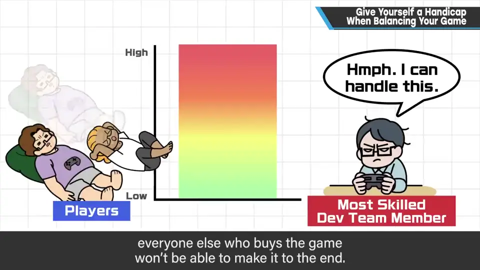
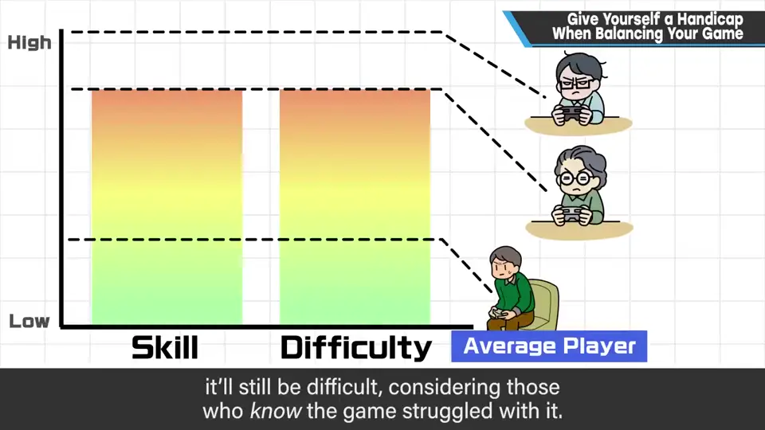
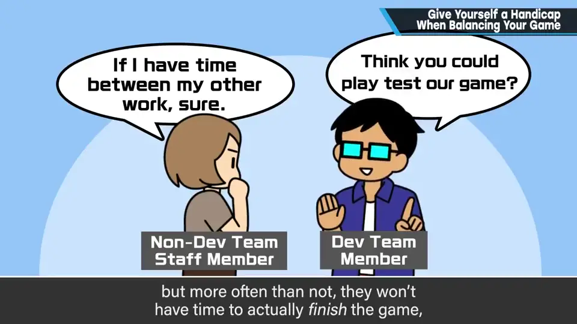
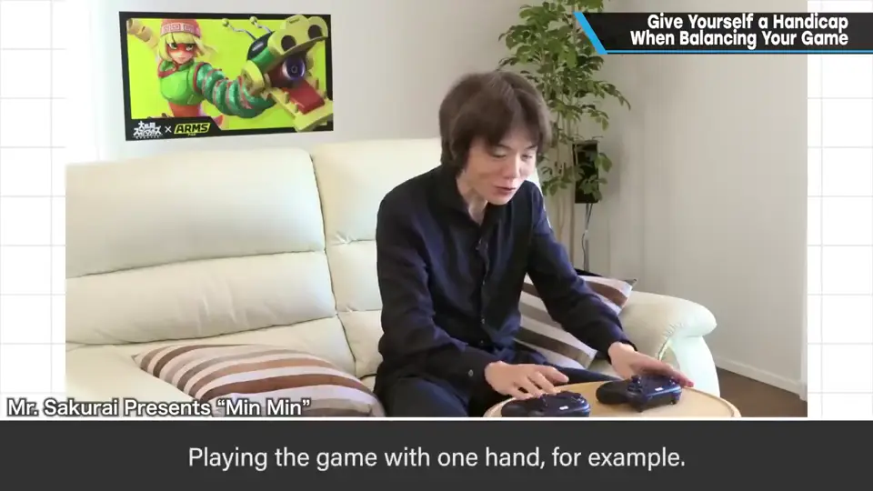
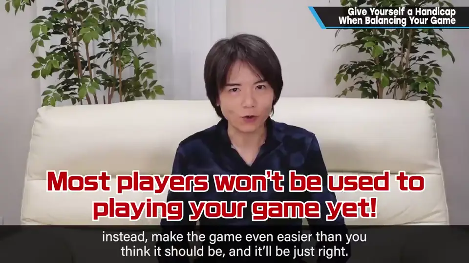

B-29 调平衡时给自己加个让分
原标题：Give Yourself a Handicap When Balancing Your Game

速览
团队内常常调整游戏平衡。动作游戏中（说得粗一点）所谓「受苦游戏」这类攻略严苛的游戏，调整其实不太难：开发人员熟悉游戏，只要调到开发者勉强能通关就行——几乎熟知一切的人才勉强能赢，那肯定很难。团队里也有人玩得好、有人不好，越按高手调越难；但如果真按高手调，其他人买了游戏也打不到最后，这太没意思。即使按团队里中等水平的人调，熟悉的人都吃力，所以还是很难——他们也不是一直只玩这款游戏。当然最好是请不熟悉的人从头玩，但通常没时间让对方玩到最后，而且对方也会逐渐熟悉，无法用同一个人重试第二、三次。所以要记住：难度必须比熟练的开发者感觉的大幅降低。樱井会给操作加让分（handicap）：例如单手玩——熟悉游戏但手忙脚乱，算是一定程度的让分；或者减少体力等物理让分、让条件更严苛。每个人水平差异很大，没有正解；攻克难关的喜悦也存在。但熟悉开发的人别把自己当标准，调得比想象中更低才刚好。
1. 「受苦游戏」的调整其实不难 0:03
团队内常进行游戏平衡调整。动作游戏中（说得粗一点）所谓「受苦游戏」这类攻略严苛的游戏，调整其实不太难：开发人员熟悉游戏，只要调成开发者勉强能通关就行——几乎熟知一切的人才勉强能赢，那肯定很难。


- 团队里也有玩得好和不好的人；越按高手调，通关越难。
- 但如果真按高手来调，其他人买了游戏也打不到最后——直截了当地说，这很无聊。
- 即使按团队里中等水平的人来调，熟悉的人都要苦战，所以还是很难——尽管他们也不是一直只玩这一款游戏。

2. 请人试玩的局限 1:17
当然最好是请不熟悉的人来从头玩。但通常没时间让对方玩到最后，而且对方也会逐渐熟悉，没法用同一个人做第二、第三次重试。

3. 给自己加让分 1:31
总之要记住：难度必须比熟练的开发者感觉的大幅降低。樱井会给操作加让分：
- 例如单手玩：熟悉游戏，但手忙脚乱，算是一定程度的让分；
- 减少体力等物理让分，或让条件更严苛。


每个人的水平差异很大，没有正解；攻克难关的喜悦也是存在的。
自测题
1. 为什么说「受苦游戏」的难度调整其实不难？
开发者熟悉游戏，只要调成开发者勉强能通关，就一定很难。 0:03
2. 请不熟悉游戏的人试玩有什么局限？
通常没时间让对方玩到最后；对方也会逐渐熟悉，同一个人不能做第二、三次测试。 1:17
3. 樱井用什么方法给自己加让分？
单手玩（熟悉但手忙脚乱）、减少体力等物理让分、让条件更严苛；并把难度调得比想象中更低。 1:31